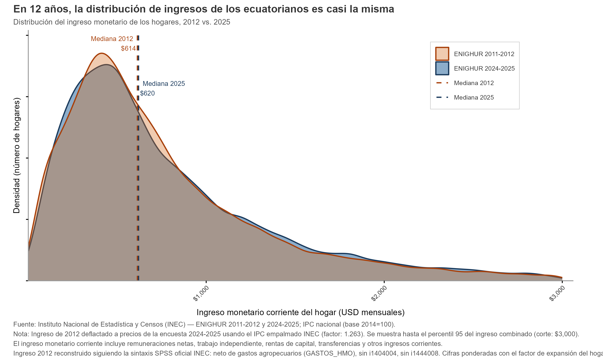

Ingresos y gastos de los ecuatorianos, 12 años después
ENIGHUR 2024-2025
En esta entrega del Quantificador, Daniel Sánchez analiza los datos recientes de la Encuesta Nacional de Ingresos y Gastos de los Hogares Urbanos y Rurales (ENIGHUR), realizada por el INEC en 2024-2025. Se revisan patrones de ingreso y gasto de los hogares, con información que no se recolectaba desde 2011-2012.
1 ¿De qué sirven las encuestas de ingreso y gasto?
Las agencias estadísticas de un país reportan información crucial sobre su sociedad y economía, para así orientar mejor la creación de política pública y apoyar la toma de decisiones en todos los sectores de la sociedad. En Ecuador, dicha agencia es el Instituto Nacional de Estadística y Censos (INEC), que tiene el mandato de llevar a cabo el censo decenal, así como varias encuestas y la recolección de datos administrativos.
Uno de estos productos es la Encuesta Nacional de Ingresos y Gastos de los Hogares Urbanos y Rurales (ENIGHUR). Esta encuesta es la fuente principal para comprender los patrones de ingreso y gasto en Ecuador. Se preguntarán: ¿de qué sirve esta encuesta si ya se cuenta con la encuesta de empleo, que nos da ingresos del hogar? Bueno, la ENIGHUR es extremadamente detallada en las cantidades y fuentes de ingreso de los ecuatorianos, dándonos información desagregada sobre de dónde ganan dinero, más allá de agregados amplios. Esto permite entender la distribución del dinero en la sociedad de una mejor manera. El ingreso es una variable importante para varios programas públicos, puesto que solo ciertas personas que ganan poco dinero suelen ser elegibles. Por otro lado, comprender la estratificación socioeconómica también es importante para las empresas al momento de poner precios, por ejemplo.
La ENIGHUR es especialmente importante porque es la única encuesta que detalla el gasto de los hogares de forma desagregada. Una de las estadísticas más importantes, la tasa de inflación mensual, depende de entender cómo gastan las personas su dinero; es decir, qué porcentaje de sus gastos está dedicado a cada uno de los componentes de la tasa de inflación. Sin estos valores, llamados “pesos”, es imposible calcular una tasa de inflación representativa para el consumidor promedio, es decir, la mayoría de ecuatorianos. La última ENIGHUR se realizó hace más de una década (2011-2012), y en este tiempo el comportamiento de los hogares probablemente ha cambiado. Sin los pesos que describo, la inflación en todos estos años, particularmente en los últimos, está probablemente mal calculada.
En su extremo detalle, la ENIGHUR también nos permite entender tópicos especializados que han surgido en los últimos años. ¿Qué alimentos son los que más le cuestan al ecuatoriano? ¿Las familias de la Sierra consumen distinto que las de la Costa? ¿Qué provincias gastan más en alcohol y estupefacientes? ¿Qué tanto gastan los hogares en salud? Y mucho más.
A continuación, reviso, de forma algo superficial, los patrones más interesantes de la ENIGHUR.
2 El hogar ecuatoriano promedio gana $889 y gasta el 77% de ese ingreso
La encuesta nos informa que, durante 20251, el promedio del ingreso monetario de los hogares fue de $8892. Este promedio es un poco más optimista que el de la ENEMDU, dependiendo de cómo se lo calcule. Ya que la ENIGHUR es una encuesta optimizada tanto para medir el ingreso como el gasto, el valor de $889 es la mejor estimación disponible para este periodo.
El gráfico de abajo muestra cómo el ingreso de los hogares se distribuye en diferentes tipos de gasto para el hogar promedio. La gran mayoría de este ingreso se dedica a gasto corriente, con un promedio de $642 (72.2% del total). El gasto corriente es gasto de “corto plazo”: alimentos, vivienda, entre otros3. Un pequeño porcentaje se dedica a gasto de no consumo, es decir, impuestos, pensiones alimenticias, matriculaciones y transferencias (“regalos” monetarios) a otros hogares o instituciones.
El componente que más les pesa a las familias es el gasto en alimentos y restaurantes: $202 en promedio, representando el 22.8% del ingreso y el 32% del gasto de consumo total. De acuerdo con la teoría económica (ley de Engel) y la investigación empírica, este alto porcentaje es muy común en países en vías de desarrollo. Como comparación, los hogares canadienses dedicaron el 15.7% de sus gastos a comida.
La vivienda y servicios representa un 7.8%, seguida de muebles y vestimenta. Estos valores, especialmente en dólares, pueden parecer relativamente bajos. Es importante recordar que estos valores promedian hogares rurales y urbanos, por lo que pueden parecer algo bajos, ya que los valores pequeños de los hogares rurales traen el promedio hacia abajo.
Un detalle interesante es que, en promedio, el ahorro o diferencia entre ingresos y gastos es de $205, representando el 23.1% del ingreso. Cabe recalcar que la ENIGHUR no pregunta directamente sobre el ahorro; esta es una variable calculada por mí, restando los agregados y dividiendo para el número de hogares que la encuesta representa. Esta es una práctica común para el análisis de proporciones. Para entender mejor las tendencias de los valores en dólares, es mejor utilizar percentiles, lo que haremos más abajo.
3 La distribución del ingreso en 2025 es esencialmente la misma que en 2012
En la anterior sección, utilizo el ingreso promedio, y no la mediana u otros percentiles, para poder reconciliar bien ingresos con gastos. Sin embargo, siempre es más informativo observar percentiles para entender mejor la distribución del ingreso, es decir, la “organización” de los ingresos de los hogares en el país.
La mediana del ingreso según ENIGHUR fue de $620, lo que quiere decir que el 50% de los hogares gana hasta ese valor, y el otro 50% gana más. Esto es solo unos pocos dólares más alto que la mediana del ingreso en 2012 ($614)4, la última vez que se realizó la ENIGHUR. Generalmente, se espera que la economía progrese en esa cantidad de tiempo, pero desafortunadamente los datos muestran una sociedad estancada en ese nivel de ingreso. El gráfico de abajo detalla mejor la distribución del ingreso de los hogares en ambos años.

4 Los hogares rurales ganan y gastan considerablemente menos
Footnotes
El periodo de recolección de datos de la encuesta fue de diciembre de 2024 a noviembre de 2025.↩︎
INEC reporta un ingreso más alto con la misma encuesta, puesto que se consideran ingresos no monetarios mediante estimaciones del valor de dichos ingresos en especie↩︎
Formalmente, gasto en bienes y servicios dedicado a satisfacer necesidades y deseos cotidianos.↩︎
Valor ajustado por inflación de 2012 a 2025↩︎